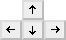

Unreal Tournament
Dieser Artikel wurde für die folgenden Ubuntu-Versionen getestet:
Ubuntu 14.04 Trusty Tahr
Zum Verständnis dieses Artikels sind folgende Seiten hilfreich:
 Unreal Tournament (auch UT99, UT oder UT1) ist der erste Teil der Unreal Tournament Reihe. Er basiert auf der ersten Version der Unreal_Engine und bot neue Spielmodi mit Fokus auf Teamarbeit. Nach der Veröffentlichung wurde der Umfang an Karten durch offizielle Bonus-Packs noch zusätzlich erweitert.
Unreal Tournament (auch UT99, UT oder UT1) ist der erste Teil der Unreal Tournament Reihe. Er basiert auf der ersten Version der Unreal_Engine und bot neue Spielmodi mit Fokus auf Teamarbeit. Nach der Veröffentlichung wurde der Umfang an Karten durch offizielle Bonus-Packs noch zusätzlich erweitert.
Im Jahre 2000 wurde Unreal Tournament als Game of the Year Edition (GotY) veröffentlicht. Diese enthält viele neue Karten, einige neue Spielermodelle und die Modifikationen Rocket Arena sowie Chaos.
| Menü | Spielszene |
Installation¶
Die folgenden Pakete müssen im Vorfeld installiert [1] werden:
innoextract
osspd-pulseaudio
unshield (universe)
 mit apturl
mit apturl
Paketliste zum Kopieren:
sudo apt-get install innoextract osspd-pulseaudio unshield
sudo aptitude install innoextract osspd-pulseaudio unshield
Spieldateien¶
Um an die Spieledateien zu gelangen sind weitere Schritte notwendig:
Gog.com¶
Über Unreal Tournament GotY kann das Spiel erworben werden. Aus der persönlichen Bibliothek die Datei setup_ut_goty.exe herunterladen und entpacken [2]:
innoextract setup_ut_goty.exe
Der Ordner tmp kann direkt gelöscht werden. Im Ordner app befinden sich die Spieledateien. Diesen nach ut99 umbenennen und in den Ordner ~/Spiele verschieben.
Im nächsten Schritt werden weitere Spieledateien benötigt.
Unreal Anthology¶
DVD¶
Für die Installation von Unreal Anthology legt man sich zuerst den Ordner ~/Spiele/ut99 an. In diesen wechselt man und kopiert alle benötigten Daten von der DVD:
data1.cab
data1.hdr
data2.cab
data3.cab
data4.cab
data5.cab
data6.cab
data7.cab
data8.cab
data9.cab
data10.cab
data11.cab
Dies kann über das Terminal [3] erfolgen:
cp /media/marc/UNREAL_ANTHOLOGY/Disk?/data?.* . #Laufwerkspfad ggf. anpassen.
Anschließend werden die Daten nach ~/Spiele/ut99 extrahiert:
unshield -d ~/Spiele/ut99 -D3 x data1.cab
17752 Dateien und 169 Ordner sind das Endresultat. Die überflüssigen Daten aus dem Verzeichnis ~/Spiele/ut99 können umgehend gelöscht werden [3]:
rm -rf _* 1_* 2_* 4_* Launcher* All_UT2004.EXE OCXFiles rm data?.*
Hinweis:
Den Löschbefehl ggf. anpassen sofern man noch die Titel Unreal bzw. Unreal Tournament 2004 installieren möchte!
Im Installationsverzeichnis findet man folgende Struktur:
... 3_UnrealTournament_Help ... 3_UnrealTournament_Manual_English 3_UnrealTournament_Sounds_English ...
Diese wird angepaßt [3]:
ls -d 3_UnrealTournament_* | sed 's/^3_UnrealTournament_\(.*\)$/mv & \1/' | bash
Nun von der gewünschten Sprache die Dateien in den jeweiligen Hauptordner kopieren. Hier z.B. alles aus Help_Germanall nach Help kopieren. Gleiches gilt für Manual, Sounds, Speech und System im Anschluss bei allen Ordnern die Endung all entfernen. So wird aus Sounds_All z.B. Sounds [3]:
ls -1d *_All | sed 's/\(.*\)_All$/\[ -d \1 \] \&\& mv &\/* \1\/ || mv & \1/' | bash
Es sollte sich die folgende Struktur herausgebildet haben:
Exe
Help
Maps
Manual*
Music
Sounds
System
Textures
Den Ordner mit der Anleitung in der gewünschten Sprache nach Manual umbenennen und die restlichen Ordner (z.B. Manual_Spanish, Manual_French und Manual_Italian) löschen.
Es müßten am Ende 665 Objekte mit einer Gesamtgröße von ~675,0 MB vorhanden sein.
Liflg¶
Von der Seite liflg.org die Datei unreal.tournament_436-multilanguage.goty.run herunterladen und anschließend die Ausführrechte setzen [3] [4]:
./unreal.tournament_436-multilanguage.goty.run --noexec --target liflg
Das Icon ut.xpm aus dem Ordner liflg in das Spieleverzeichnis ~/Spiele/ut99 verschieben. Aus dem Orfner bin wird die Datei ut und aus bin/Linux/x86 wird ucc benötigt. Anschließend die Archive Credits.tar.gz, data.tar.gz, NetGamesUSA.com.tar.gz, OpenGL.ini.tar.gz und UT436-OpenGLDrv-Linux-090602.tar.gz entpacken [2].
Neben dem Ordner System findet man nun weitere durchnummerierte Ordner (z.B. System (2)). Die Inhalte dieser Ordner in den Hauptordner System kopieren und vorhandene Dateien überschreiben.
Im nächsten Schritt NetGamesUSA.com, System und Textures in das Spieleverzeichnis verschieben. Hier die Ordner zusammenführen und bereits vorhandene Dateien überschreiben.
Nach dieser Aktion kann der Ordner liflg gelöscht werden.
| Mod |
Loki_Compat¶
Im nächsten Schritt werden veraltete Bibliotheken benötigt. Diese kann man von Loki_Compat herunterladen. Das Archiv nach ~/Spiele entpacken [2]. Um UT spielen zu können werden noch die Bibliotheken libdl.so.2, libc.so.6 und libpthread.so.0 benötigt. Diese Dateien und ihre Verknüpfungen werden in den Ordner von ~/Spiele/Loki_Compat kopiert.
Alternativ kann diese Version  genutzt werden.
genutzt werden.
Sound¶
Damit auf aktuellen Computersystemen der Sound abgespielt werden kann wurde im Vorfeld schon ein passendes Paket installiert. Jedoch müssen noch die notwendigen Einstellungen in der Datei UnrealTournament.ini vorgenommen werden [5], welche sich im Spieleverzeichnis unter ~/Spiele/ut99/System befindet.
Hier den Eintrag
AudioDevice=ALAudio.ALAudioSubsystem
entsprechend abändern:
AudioDevice=Audio.GenericAudioSubsystem
Starter¶
Als nächstes im Spieleverzeichnis den Starter ut.sh erstellen [5] und anschließend mit Ausführrechten [4] versehen:
1 2 3 4 5 6 7 | #!/bin/bash LCPATH=/home/NUTZERNAME/Spiele/Loki_Compat UT=/home/NUTZERNAME/Spiele/ut99 echo Running from $SCPATH cd $UT export LD_LIBRARY_PATH=$LCPATH $UT/ut |
Hinweis:
NUTZERNAME durch den eigenen Benutzernamen abändern.
Abschließend kann das Spiel über ut.sh gestartet [6] und auf Wunsch eine Menüeintrag [7] vorgenommen werden.
Spielgeschwindigkeit¶
Das Spiel läuft auf aktuellen Prozessorgenerationen viel zu schnell und muß gedrosselt werden. Hier - wie in Prozessortaktung beschrieben vorgehen.
Bonus Packs¶
Das Bonus-Pack kann von liflg.org heruntergeladen und entpackt [3] werden:
./unreal.tournament.official.bonus.pack.collection.run --noexec --target bonus
Nach dem Vorgang in den Ordner bonus wechseln. Die darin enthaltenen Archive bp*.tar.gz entpacken [2] und aus den jeweils neu entstandenen Ordnern bp* alle Unterodnern in das Spieleverzeichnis verschieben.
| Map |
Mods¶
Das Spiel kann durch eine Reihe von Modifikationen angepaßt und erweitert werden. Dies können unter anderem Maps, Texturen und Voicepacks sein. Die Linksammlung am Ende der Seite listet passende Seiten auf.
Die folgende Tabelle gibt einen kleinen Überblick, welche Dateien wohin kopiert werden müssen:
| Modifikationen | |
| Ordner | Dateityp |
| Help | *.txt, *.htm und *.html |
| Maps | *.unr |
| Music | *.umx |
| Textures | .utx |
| Sounds | *.uax |
| System | .u, *.int und *.ini |
Hinweis:
Bei der Verwendung von Mods muss auf die Schreibweise der Dateien geachtet werden, da diese ansonsten nicht in UT gespielt werden können.
Tastenkürzel¶
| Tastenkürzel | |
| Taste(n) | Funktion |
 / /  | Schießen |
|  | Charakter steuern. |
| Springen | |
| C | Bücken / Kriechen |

Infobox¶
| Unreal Tournament / Unreal Tournament GOTY (Game of the Year) | |
| Genre: | Ego-Shooter |
| Sprache: |     |
| Veröffentlichung: | 1999/2000 |
| Publisher: | GT Interactive |
| Systemvoraussetzungen: | 200 MHz CPU / 32 MB RAM / 300 MB freier Festplattenspeicher / CD-ROM / Grafikkarte >= 8MB RAM |
| Medien: | DVD (1) / CD (2) |
| Strichcode / EAN / GTIN: | 4012160162500 |
| Läuft mit: | nativ |


- Erstellt mit Inyoka
-
 2004 – 2017 ubuntuusers.de • Einige Rechte vorbehalten
2004 – 2017 ubuntuusers.de • Einige Rechte vorbehalten
Lizenz • Kontakt • Datenschutz • Impressum • Serverstatus -
Serverhousing gespendet von